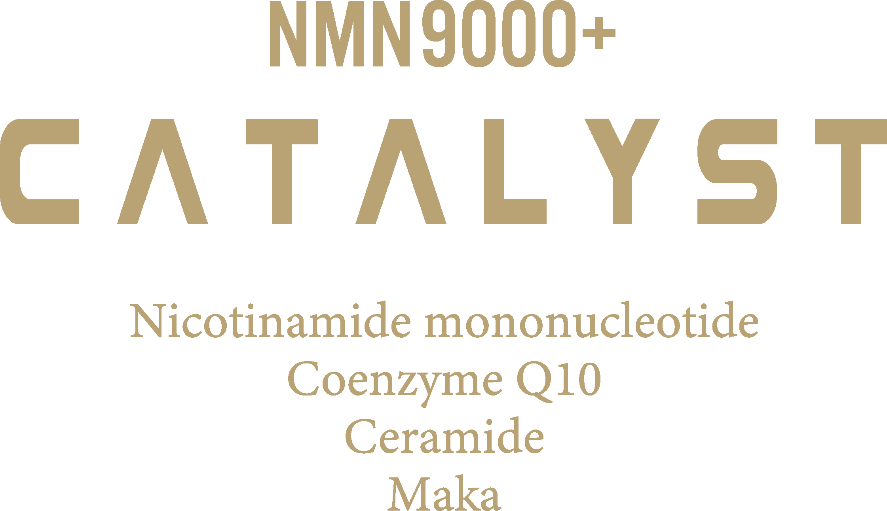
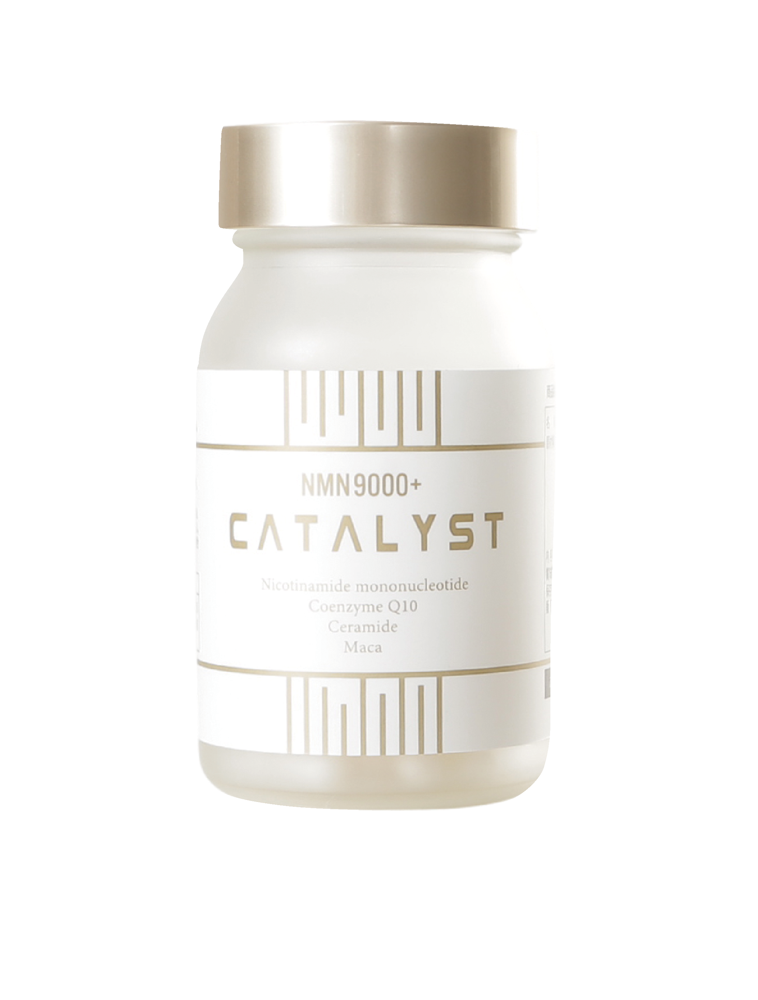
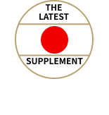
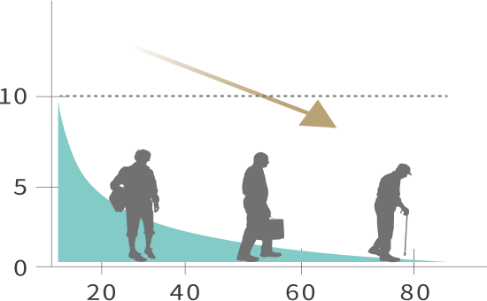
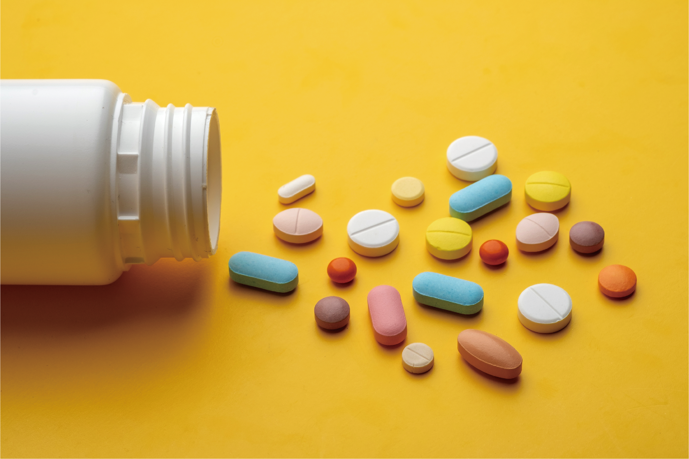
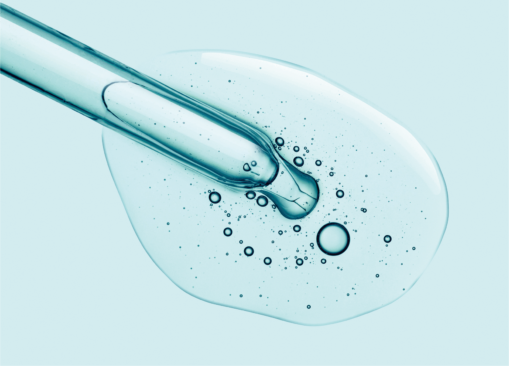
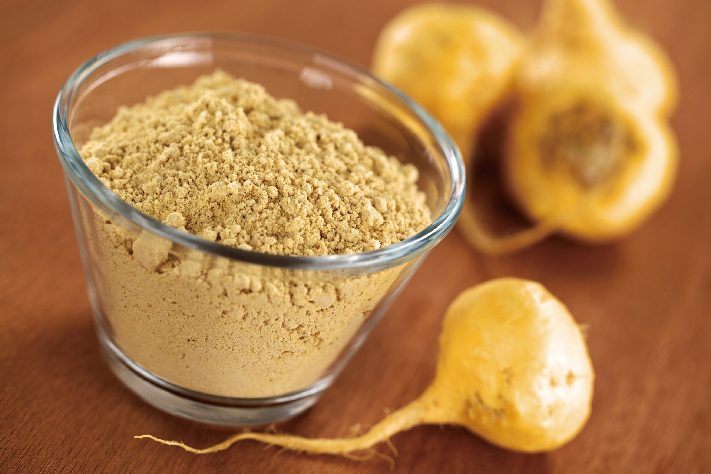
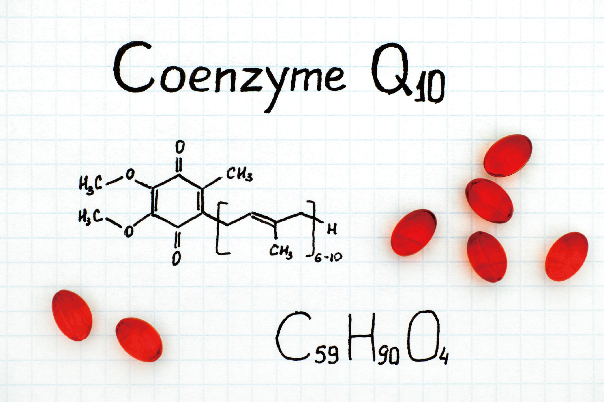

NMN9000+ CATALYST カタリスト
価格39,600円(税込)※一瓶90粒/1ヶ月分目安
純度99%以上・日本製NMN9,000mg配合

加齢とNAD※の関係
※NMNは体内でNADに変化
NADは本来、人間の体内で自然に作られる成分ですが、加齢とともに体内のNAD量は減少します。

体内のNAD量は、50代で20代の半分にまで減少すると言われています。NADの減少は、代謝の低下や疾患など様々な老化現象に繋がります。解決策は体内のNAD量を増やすことですが、そのためにはNADの前駆体であるNMNを外部から摂取することが有効であると言われています。
NMNが多く含まれる食べ物から摂取できないの？
NMN300mg（本製品1日分の目安量）は
ブロッコリー5,000個／枝豆25,000個に相当

×5,000個

×25,000個
この様に、NMN含有量が多いとされる食品であっても、理想とする量を摂取するには現実的ではありません。
だから！サプリメントでNMNを手軽に摂取
本製品のPOINT
安全安心の日本産原料
NMNは日本国内のGMP認定工場で製造。
もちろん、サプリメント全体の製造も同様です。
JAPAN 日本製
NMNと相乗効果の高い成分を配合


マルチビタミン
エネルギーを作るサポート、健康な体の維持。

セラミド
乾燥からバリアし、みずみずしい肌に

マカ
豊富な栄養素を含み、滋養強壮・活力をチャージ。

コエンザイムQ10
代謝に重要な物質で、エネルギー産生やサビにアプローチ
1粒に100mgのNMNNMNを凝縮。
最新のヘルスケア習慣を無理なく日常に取り入れることを重視し、品質・価格・飲みやすさ全てにこだわりました。
続けやすい価格
国産にこだわり、質の高いNMN原料を用いた本製品ですが、宣伝広告費などのコストを抑えることで、続けやすい価格を実現しました。